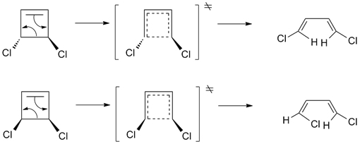

主要有机物的结构与反应机理
原子轨道和分子轨道
原子轨道S、P轨道
甲烷中的成键轨道
乙烯中的成键轨道
乙炔中的成键轨道
丙二烯中的成键轨道
1,3-丁二烯的π轨道
苯中的成键轨道
苯的π轨道
甲醛中的成键轨道
芳香性和π轨道
反应机理
烯烃的亲电加成反应
烯烃与溴化氢加成反应
丁二烯溴化的1,2-加成和1,4-加成
溴甲烷的S
N
2取代反应
邻基参与效应
E2消除反应的立体选择性
E1消除反应
醛式和烯醇式互变异构
饱和醛、酮与HCN的亲核加成反应
共轭醛、酮加成反应
酸催化酯水解反应和酸催化酯生成反应
频哪醇重排
重氮盐的频哪醇重排反应
电环化反应的立体专一性
电环化反应环丁烯顺旋方式
电环化反应己三烯对旋方式
亲双烯体的环加成立体化学
二烯的Diels-Alder反应
环戊二烯的[1,5]氢-
σ
迁移
电环化反应的立体专一性
Jmol是用Java语言编写的程序，需要安装Java运行环境。使用其他操作系统的用户，请自行下载1.4版本以 上的jre。
点击下载
（win）
正常
满屏
